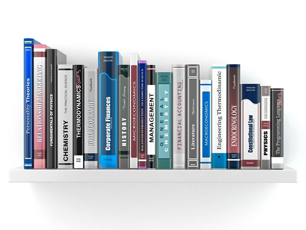

О
нас
Всегда нужно знать того,
с кем Вы работаете.
Гордимся своими проектами
Международные публикацииВсе проекты, которые мы начинаем, заканчиваем с успехом. Если мы говорим, что предоставим какую-то услугу, то мы ее предоставим таким образом, чтобы клиент остался максимально доволен и обратился к нам снова.
Качество превыше всего
Международные публикацииНельзя делать что-либо не соответствущим образом. Всё должно быть максимально правильно и корректно, чтобы потом сказать - идеально.
Клиент важнее всего
Международные публикацииКлиент ставит задачи - и наша команда их выполняет. Компания может посоветовать, как сделать выбор журнала, когда лучше подавать статью и т.д., но выбор всегда остается у клиента.
Постоянная связь
Международные публикацииВ случае возникновения любых вопросов Вы всегда можете нам написать и получите ответ в максимально короткие сроки.
Широкий спектр услуг
Международные публикацииМы предлагаем как комплексные, так и одиночные услуги. Но мы не ограничиваем наших клиентов в выборе, сделаем то, что нужно конкретно каждому.

Лучшие цены
Международные публикацииНаша ценовая политики основывается на реальных аспектах предоставляемой услуги, наша цель - успешные публикации и выполнение услуг. а не зароботок, но всё же любой труд должен быть оплачен, поэтому мы не благотворительная организация.
Подробнее
«Международные публикации» – это ведущая компания в сфере науки и наукометрии, которая оказывает публикационные услуги, издавая научные работы в мировых базах данных Scopus и Web of Science.
Мы публикуем только высококачественные и востребованные для современной науки исследования ученых.
Наши специалисты регулярно следят за всеми обновлениями и тенденциями, чтобы быть в курсе всех изменений в сфере наукометрии и создавать все условия для успешного рецензирования работ наших клиентов в журналах международного уровня.
«Международные публикации» - это
- Команда профессиональных редакторов, переводчиков и специалистов по подбору журнала для публикации
- Партнерство с более, чем сотней международных журналов
- Авторитет среди ученых по всему миру
Наши
Услуги
Здесь описаны только самые популярные услуги.
Также мы предоставляем другие различные услуги в сфере наукометрии.
Чтобы узнать о интересуещей Вас услуге заполните форму на сайте.
-

Публикация в Scopus
от 700$На сегодня наукометрическая база данных Scopus – это самая большая реферативная платформа, где ученые публикуют свои научные работы.
Что дает ученому публикация в Scopus?
1) Открытый доступ к мировой литературе, поэтому каждая статья, опубликованная в ней, способствует улучшению статуса ученого и его исследовательской деятельности.
2) Повышение видимости работ и уровня цитирования материала другими учеными.
3) Отслеживание эффективности своих публикаций и работ других ученых, а также возможные варианты сотрудничества.
Но публикация в этой базе данных подразумевает уникальное содержание, правильное оформление и обязательный перевод научной работы на академический английский язык. Именно тогда со статьей сможет ознакомиться международное научное сообщество и оценить ее по достоинству.
Компания «Международные публикации» предоставляет комплексные и индивидуальные публикационные услуги. Заказать услугу «Публикация в Scopus» можно у нас на сайте, заполнив заявку. С Вами свяжутся в течение дня или на следующий день. Обращаясь к нам, каждый ученый получает гарантию качественно выполненных работ и публикацию в журналах, входящих в Scopus.
-
Публикация в Web of Science
от 950$Деятельность учёного – это кропотливый и каждодневный труд, а также неуемные поиски глубоких тем для открытий, которые будут интересны и полезны современной науке и человечеству.
Но чтобы эти поиски стали реальными и обрели популярность, ученый должен оформлять их в научные работы и публиковать в международных наукометрических базах данных. Тогда большое количество исследователей получат доступ к ним и возможность совершать мировые открытия, используя эту ценную информацию.
База данных Web of Science - это одна из наукометрических платформ, в журналах которых пытаются опубликовать свои работы множество ученых со всего мира. WoS тщательно отбирает все журналы, претендующие на включение, а те в свою очередь, кропотливо проверяют весь научный контент для публикаций.
Если Вы решили опубликовать статью в Web of Science:
1) научный материал должен содержать эксперимент, актуальную тему и полезные результаты;
2) статью нужно перевести на академический английский язык и вычитать;
3) строго придерживаться правил оформления;
4) соблюдать высокий процент уникальности работы.
Если все требования не выполнить, тогда в момент рецензирования статью вернут на исправления или совсем откажут в публикации. Чтобы обезопасить себя от двойной работы, закажите услугу «Публикация в Web of Science» у нашей компании «Международные публикации», и мы гарантируем, что мировое научное сообщество узнает о Ваших исследованиях и оценит их по достоинству. Мы проводим комплексную подготовку работы «под ключ», а также подбираем список журналов, которые наиболее точно соответствуют теме исследований.
Еще мы работаем с индивидуальными заказами. Возможно учёному нужно сделать лишь грамотный перевод статьи или проверить уникальность. Все это мы с радостью выполним для каждого клиента. Напишите нашему специалисту на сайте, и он расскажет о том, как начать работу с компанией «Международные публикации».
-
Редактура статьи
Индивидуально $Статья, которая претендует на добавление в журнал, входящий в международную базу данных Scopus или Web of Science, должна соответствовать всем высоким публикационным требованиям. Ее необходимо тщательно вычитать, прежде чем отправлять на рецензирование, иначе в случае ошибок в работе, ее вернут автору. Поэтому, чтобы исключить возможность такого варианта, воспользуйтесь помощью профессиональных редакторов нашей компании «Международные публикации» и закажите услугу «Редактура статьи». Наши специалисты помогут усовершенствовать материал и произвести вычитку всего текста.
Как только мы получаем статью, мы проводим ее аудит, чтобы изучить, какие шаги по редактуре нам необходимо будет предпринять. И только потом начинаем работу над текстом.
Наши редакторы проводят такие проверки:
1) Смотрим на актуальность темы, есть ли в исследовании эксперимент, открытие, несет ли он практический характер
2) Редакторы проверяют как написана аннотация, ведь именно ее будут читать ученые, прежде чем решить открывать полный текст статьи или нет. А еще проверяем ключевые слова. Способ их составления влияет на доступность работы в поисковике.
3) Мы анализируем как построен сам материал в статье, его логику, последовательность разделов, шрифт и оформление библиографического списка и т.д.
Благодаря комплексной работе ученый получает от нас статью, которая полностью соответствует всем высоким публикационным критериям, и ее можно смело отправлять на рецензирование.
Чтобы заказать «Редактура статьи», напишите нашему специалисту, и он подскажет как это сделать самым быстрым и лучшим для Вас способом.
-
Проверка уникальности текста
Индивидуально $Публикация в Scopus или Web of Science – это престижно для каждого ученого, но получить индексацию статьи в этих базах данных не так просто, потому что их требования очень высокие. Одно из них – это рецензирование каждой статьи научными экспертами, которых приглашают для проверки работ со всего мира. Частью процесса рассмотрения является исследование текста на уникальность. Если в материале будет большой процент плагиата, такую работу возвращают автору, и лишь после ее редактирования возможна повторная подача.
Каждому ученому нужно понимать, что в научных кругах международного уровня академическая доброчестность очень ценится и подрывать свой авторитет не стоит. Но статья не может обойтись без упоминаний на другие источники, поэтому здесь нужно соблюдать допустимую грань. Наша компания проводит проверку текста на уникальность с помощью профессионального программного обеспечения и при обнаружении плагиата работает с текстом, чтобы повысить уникальность до необходимого показателя.
Если Вы не уверенны в уникальности статьи, напишите нашему специалисту, и он подскажет как заказать услугу «Проверка текста на уникальность». Мы проверяем статью бесплатно и только повышение процента уникальности нашими редакторами будет входить в оплату.
-
Академический перевод
Индивидуально $Наша компания «Международные публикации» сотрудничает с журналами, которые входят в самые большие библиографические платформы в мире – Scopus и Web of Science. Их требования к статьям очень высокие и это оправдано. В этих базах данных индексируется научная литература мирового уровня. Великие ученые планеты публикуют в них свои исследования, открывая доступ к важным открытиям.
Чтобы подать статью на рецензирование в журналы Scopus и WoS, ее необходимо перевести на академический английский язык. Это то благодаря чему рецензенты смогут ознакомиться с материалом и произвести корректную оценку. Наша компания предоставляет как комплексные, так и единичные услуги. Вы можете заказать у нас «Академический перевод», и мы поможем Вам перевести статью, согласно всем требованиям.
Наша компания гарантирует качество перевода, потому что с текстом работает не только профессиональный переводчик, а и носитель языка. Такая двойная работа, которая называется пруфридинг, обеспечивает качественную вычитку материала, сохранение смысла работы, правильную передачу ее терминологии и содержания, чтобы другие ученые смогли в полной мере ознакомиться с Вашим исследованием и воспользовались точными данными для своих открытий. Также, Вы можете заказать «Публикация в Scopus», «Публикация Web of Science» под ключ, и мы возьмем весь сложный публикационный процесс на себя, освободив Ваше время ля научной деятельности.
Связаться
с нами
Оставьте заявку на нашем сайте.
Мы свяжемся с Вами и ответим на все Ваши вопросы.